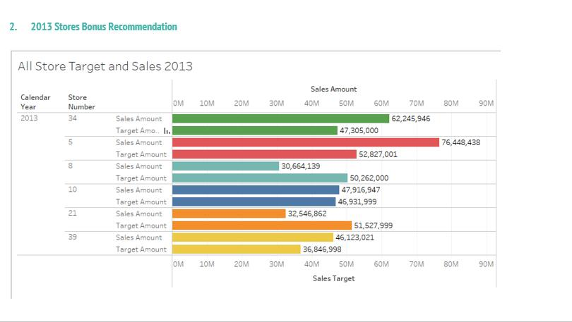

Key business questions:
1. Give an overall assessment of store number 10, and 21 sales.
a. How are they performing compared to target? Will they meet their 2014 target?
b. Should either store be closed? Why or why not?
c. What should be done in the next year to maximize store profits?
2. Recommend 2013 bonus amounts for each store if the total bonus pool is $2,000,000 using a comparison of 2013 actual sales vs 2013 sales targets as the basis for the recommendation.
3. Assess product sales by day of the week at stores 10 and 21. What can we learn about sales trends?
4. Should any new stores be opened? Include all stores in your analysis if necessary. If so,where? Why or why not?
